Hỗ trợ
Bắt đầu
Không thấy Sổ Xanh trong bảng chia sẻ
iPhone / iPad không tự đưa app mới vào hàng app của bảng chia sẻ. Bạn bật một lần là xong:
- Mở một ảnh biên lai (trong app Ảnh hoặc app ngân hàng / ví), bấm Chia sẻ.
- Ở hàng biểu tượng app, vuốt sang trái tới cuối, bấm Thêm (dấu …).
- Bấm Sửa, rồi bấm dấu + màu xanh cạnh Sổ Xanh → Xong.
Từ lần sau Sổ Xanh nằm sẵn trong hàng app. Thanh toán xong, bạn chỉ cần Chia sẻ ảnh biên lai → chọn Sổ Xanh → xem lại → Lưu.
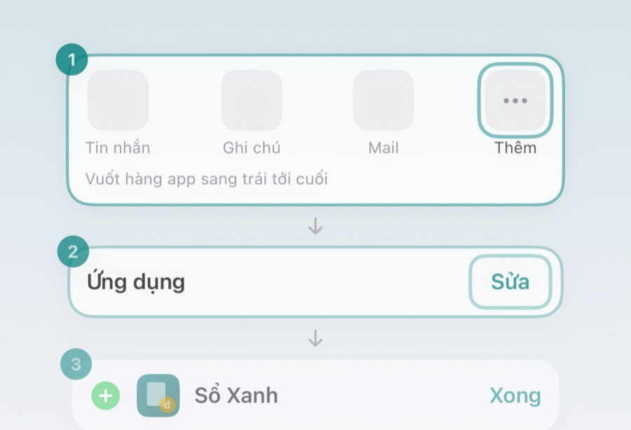
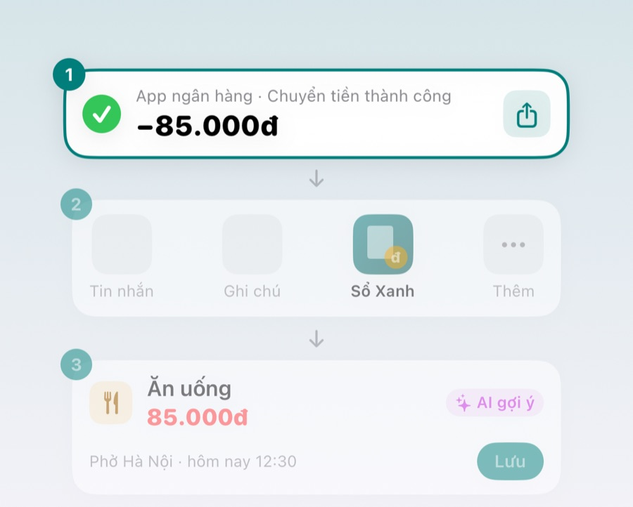
Mới cài, ghi lại những khoản đã chi tháng này thế nào?
Lúc chưa có giao dịch nào, màn Giao dịch hiện thẻ "Bắt đầu ghi chi tiêu" với 3 cách nhập bù:
- Ảnh biên lai hoặc lịch sử giao dịch: chọn tối đa 10 ảnh một lần. Nhanh nhất là chụp màn hình lịch sử giao dịch trong app ngân hàng / ví – một ảnh ra cả chục khoản, bạn tick những khoản muốn lưu rồi bấm Lưu.
- Gõ nhiều khoản không có bill: ví dụ "phở 50k, cafe 30k, gửi xe 5k" – mỗi dòng, hoặc mỗi đoạn cách nhau dấu phẩy, là một khoản.
- Nhập tay: từng khoản, đủ thông tin.
Không cần nhập đủ từng đồng – có các khoản lớn là số liệu tháng này đã sát. Từ tháng sau chỉ cần ghi khoản mới.
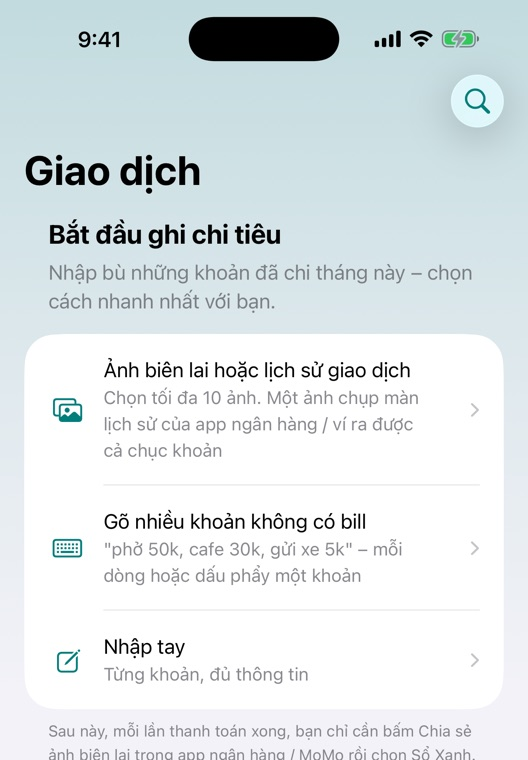
Ghi giao dịch
Gõ nhanh viết thế nào cho app hiểu?
Gõ như nhắn tin: tên khoản + số tiền. App tự hiểu thu hay chi, ngày và danh mục, rồi mở màn xác nhận để bạn xem lại trước khi lưu.
- Số tiền: 50k / 50 nghìn / 50 ngàn = 50.000đ; 1tr5 hoặc 1,5tr = 1.500.000đ; 1 xị = 100.000đ; ghi đủ 50.000 cũng được.
- Ngày: thêm "hôm qua", "hôm kia", "tối qua"; không ghi thì là hôm nay.
- Khoản thu: "lương 15tr", "mẹ cho 500k" – app ghi là khoản thu.
- Nhiều khoản một lần: mỗi dòng một khoản (bấm Return để xuống dòng), hoặc cách nhau dấu phẩy khi mỗi khoản đều có số tiền: "phở 50k, cafe 30k".
Gõ nhanh là tính năng Premium (có 14 ngày dùng thử miễn phí).
App đọc biên lai sai
App không tự lưu: ảnh nào cũng mở màn xác nhận trước. Các ô có nhãn "AI gợi ý" là app tự điền – chạm vào để sửa số tiền, ngày, danh mục, rồi bấm Lưu.
Bạn đổi danh mục thì app nhớ: lần sau gặp cùng nơi trả / cùng nội dung sẽ tự chọn đúng danh mục bạn đã sửa.
Mẫu biên lai nào app hay đọc sai, bạn gửi báo lỗi (cách ở mục Báo lỗi) và ghi tên ngân hàng / ví – mình sẽ thêm cách đọc cho mẫu đó.
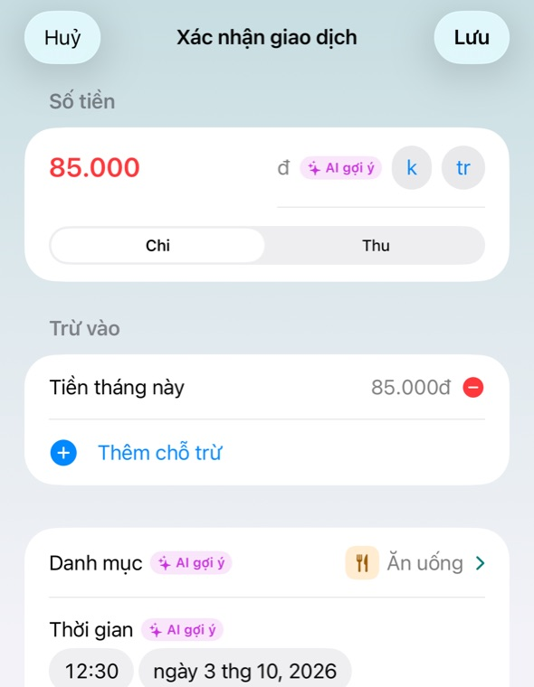
Rút tiền ATM thì ghi thế nào?
Khi đọc được biên lai rút tiền ATM, app hỏi bạn chọn 1 trong 2 để không bị tính 2 lần:
- Thêm vào chi tiêu: coi như số tiền rút ra đã tiêu hết. Sau này tiêu tiền mặt thì không nhập lại.
- Không thêm: không ghi khoản rút. Sau này tiêu tiền mặt khoản nào thì nhập khoản đó (gõ nhanh là tiện nhất).
Cách nào cũng đúng, miễn sau đó bạn làm đúng như đã chọn.
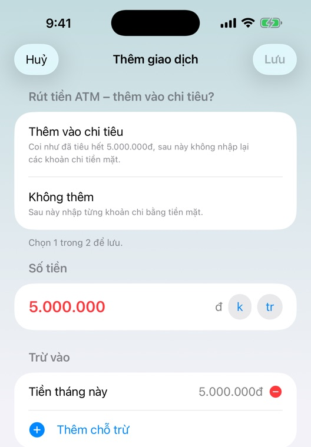
Chuyển tiền giữa các tài khoản của mình có bị tính là chi không?
Khi người chuyển và người nhận trên biên lai đều là bạn (ví dụ chuyển từ ngân hàng sang ví MoMo của mình), app hiện dòng cam "Có vẻ là chuyển tiền giữa các tài khoản của bạn". Đây thường không phải chi tiêu thật – bấm Huỷ để không ghi. Nếu đúng là một khoản chi thì bạn vẫn bấm Lưu được.
Để app nhận ra, bạn cần nhập Tên chủ tài khoản (mục dưới).
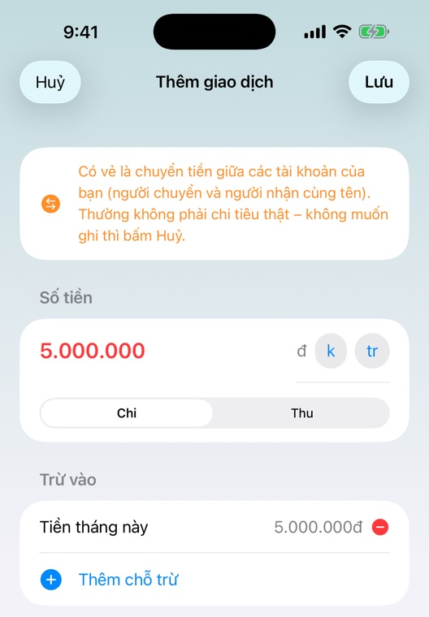
Tên chủ tài khoản để làm gì?
Là tên của bạn in trên biên lai chuyển khoản, thường viết hoa không dấu (ví dụ NGUYEN VAN AN). App dùng tên này để biết:
- khoản nào là người khác chuyển cho bạn (khoản thu), khoản nào bạn chuyển đi (khoản chi);
- khoản nào là chuyển giữa các tài khoản của chính bạn (để không tính là chi).
Nhập ở Cài đặt → Tên chủ tài khoản. Tên chỉ lưu trên máy của bạn. Bỏ trống thì app vẫn chạy, chỉ là đoán thu / chi kém hơn.
Số liệu
“Còn lại” và “Xài lố” nghĩa là gì?
Còn lại = Thu − Tiết kiệm − Chi của tháng đang xem. Tiết kiệm là số bạn bỏ vào quỹ trong tháng.
Khi tháng đã có khoản thu mà chi nhiều hơn, thẻ tháng đổi thành "Xài lố" màu đỏ kèm số tiền bị lố. Nếu bạn có quỹ tiết kiệm, app hỏi có muốn lấy tiền từ quỹ để bù không.
Tháng chưa nhập khoản thu nào (ví dụ chưa tới ngày nhận lương) thì app chưa báo xài lố và số Còn lại có thể âm – nhập lương vào là biết còn lại bao nhiêu.
Lương nhận cuối tháng được tính cho tháng nào?
Lương nhận cuối tháng (ví dụ ngày 28/9) thường là tiền để tiêu tháng sau. Vì vậy khoản Lương nhận từ ngày 20 trở đi, app tự tính cho tháng sau – màn xác nhận có ô "Tính cho" ghi rõ tháng nào.
Muốn khác thì chọn lại tháng ở ô đó (tháng trước / tháng nhận / tháng sau); app nhớ lựa chọn của bạn cho các lần sau. Ngày giao dịch thật vẫn giữ nguyên.
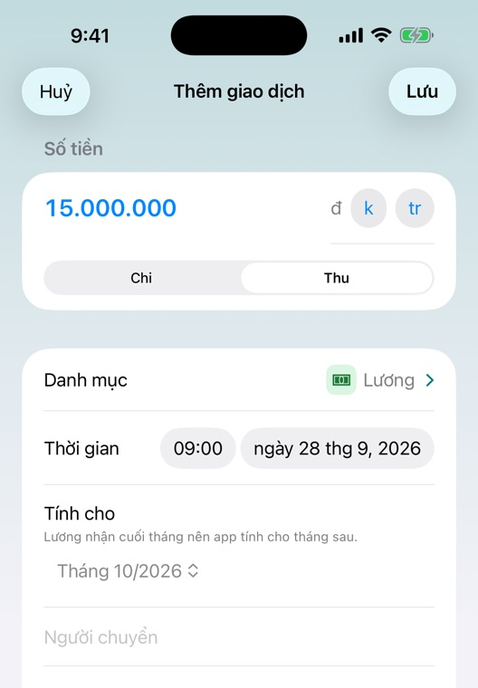
Dữ liệu & bảo mật
Dữ liệu của tôi có gửi lên mạng không?
Không. Sổ Xanh không có máy chủ và không cần tài khoản. Ảnh biên lai được đọc ngay trên máy; app không lưu ảnh, chỉ lưu chữ đọc được để bạn đối chiếu. Giao dịch nằm trên iPhone / iPad của bạn (và trong bản sao lưu của máy nếu bạn bật).
Xem chi tiết ở Chính sách quyền riêng tư.
Đổi máy, cài lại app
Dữ liệu chỉ nằm trên máy, nên trước khi đổi máy hoặc xoá app bạn nhớ sao lưu:
- Vào Cài đặt → Sao lưu dữ liệu, chọn nơi lưu file (Tệp, iCloud Drive…).
- Ở máy mới, cài Sổ Xanh, vào Cài đặt → Khôi phục từ file sao lưu, chọn file vừa lưu.
- Chọn "Thay thế toàn bộ" (máy mới) hoặc "Gộp vào dữ liệu hiện có" (máy đã có giao dịch).
Nếu bạn chuyển máy bằng bản sao lưu iCloud / máy tính của cả iPhone / iPad thì dữ liệu Sổ Xanh cũng đi theo.
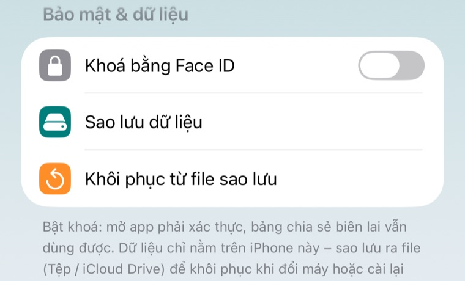
Khoá app bằng Face ID / Touch ID
Vào Cài đặt → Bảo mật & dữ liệu → Khoá bằng Face ID (máy dùng vân tay thì ghi Touch ID). Mỗi lần mở app phải xác thực; không nhận được mặt / vân tay thì nhập mật mã máy. Bảng chia sẻ biên lai không bị khoá để bạn vẫn ghi nhanh được.
Premium & thanh toán
Hết 14 ngày dùng thử thì sao?
Không mất gì và không bị trừ tiền.
- Vẫn miễn phí: dữ liệu cũ (xem, sửa, xoá), nhập tay, thống kê, ngân sách, danh mục, sao lưu, khoá Face ID / Touch ID, rút tiền khỏi quỹ.
- Cần Premium: đọc ảnh biên lai (share hoặc chọn ảnh), ảnh lịch sử giao dịch, gõ nhanh, tạo quỹ / nạp / chia tiền dư vào quỹ.
Mở khoá vĩnh viễn là trả một lần (giá ghi trên màn Premium), không thuê bao, không tự gia hạn.
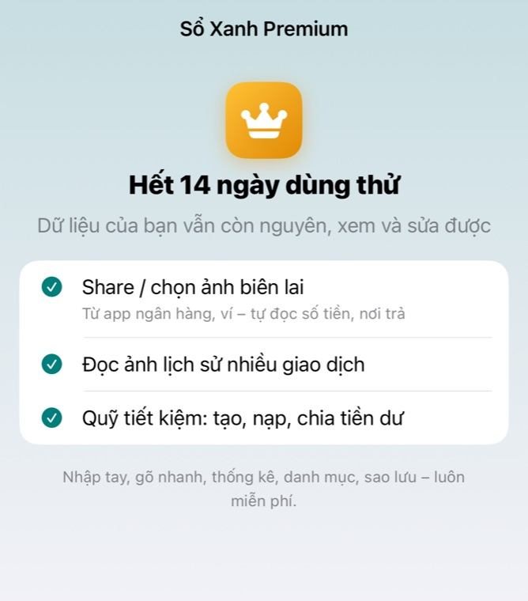
Khôi phục Premium đã mua
Premium gắn với tài khoản Apple (Apple ID) bạn dùng để mua, không gắn với máy. Cài lại app hoặc dùng iPhone / iPad khác cùng Apple ID thì thường tự mở lại.
Nếu chưa: Cài đặt → Premium → Khôi phục giao dịch mua (nút dưới cùng). Vẫn không được thì kiểm tra máy đang đăng nhập App Store đúng Apple ID đã mua.
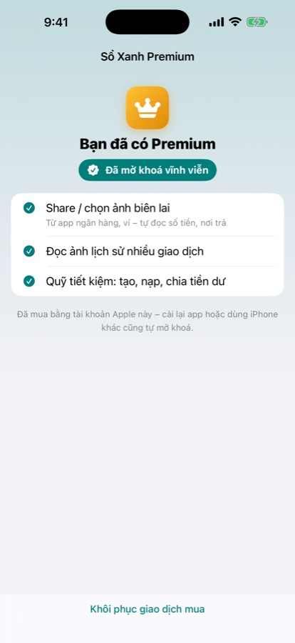
Hoàn tiền
Thanh toán do Apple xử lý nên Apple xét hoàn tiền. Bạn yêu cầu tại reportaproblem.apple.com, đăng nhập bằng Apple ID đã mua, chọn Sổ Xanh và lý do.
Báo lỗi
Trong app: Cài đặt → Hỗ trợ → Gửi báo lỗi kèm nhật ký. App mở thư soạn sẵn có phiên bản app, đời máy và nhật ký kỹ thuật (không có giao dịch hay dữ liệu cá nhân). Bạn ghi thêm lỗi xảy ra thế nào, xem lại rồi mới gửi.
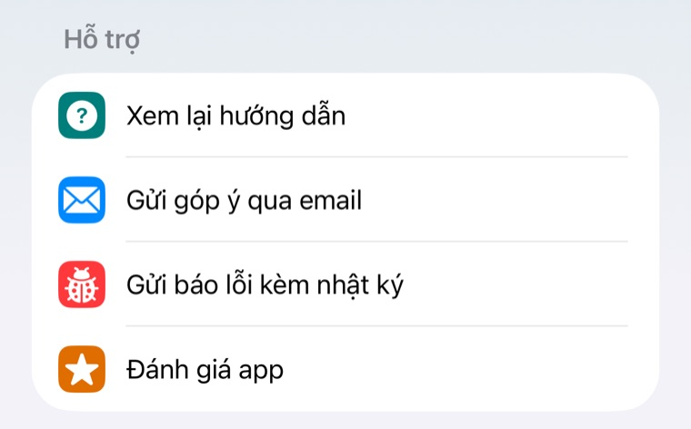